01
01Empresario
CEO FINANCIAL-LAB
conferencista y coach en finanzas
personales y corporativas
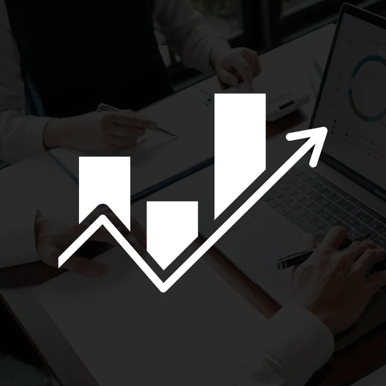
David Aponte
CEO Financial Lab
Transformación financiera sin fórmulas mágicas ni promesas vacías.
Si tu estabilidad depende de un sueldo fijo y crees que invertir es un riesgo, es porque te enseñaron a tener miedo al dinero.
Mi nombre es David Aponte y yo también crecí con esas creencias. Seguí el camino “seguro”, trabajé en grandes corporaciones… hasta que entendí que la estabilidad no es libertad.
A los 32 años logré mi independencia financiera con un método probado, sin fórmulas mágicas ni promesas vacías. 15 años me tomó llegar a él y lo logré no porque tuve suerte, sino porque diseñé un modelo en el que mi vida y mis finanzas fueron mi propio laboratorio y hoy, quiero compartirlo contigo.
Si tienes ahorros y no sabes cómo hacerlos crecer, si las deudas te ahogan o simplemente sueñas con un futuro sin preocupaciones económicas… Este espacio es para ti.
El dinero no es el problema. Es cómo lo entiendes. Y yo te enseñaré cómo cambiar eso para siempre.
Si estás aquí, es porque sabes que hay otra manera. Y yo estoy aquí para mostrártela.
¡Bienvenido a la Transformación Financiera!
deseo más sobre las conferencias ↗Roles y credenciales
01CEO FINANCIAL-LAB
Inversionista
 03
03Finanzas Personales y Corporativas
 04
04Universidad Javeriana
Diario Portafolio
El camino hacia
01
Ayuda a empresas y emprendedores a enfrentar los retos cotidianos con claridad y acción.
02
Más de 300 empresas han sido apoyadas en el proceso de superar obstáculos financieros y alcanzar una estabilidad sólida.
03
No solo basadas en teorías abstractas, sino en soluciones concretas que abordan los desafíos diarios de un empresario.
04
David Aponte ofrece conferencias y mentorías con enfoque práctico, para que puedan superar obstáculos financieros y tomar decisiones inteligentes.
Solo aprender la teoría, sino de poner en práctica estrategias reales que transformen tu vida, tanto a nivel personal como profesional.
Accede al curso de Transformación Financiera ¡AHORA! ↗Mentor
¿Cómo te puede ayudar?
David ha creado un portafolio de servicios que conecta su pasión con su propósito: y es transformar la vida financiera de las personas.

Es un espacio donde las personas comprenden cómo los ciclos económicos impactan sus negocios, dándoles la claridad y las herramientas necesarias para anticipar y adaptarse a esos cambios de manera estratégica.
Más información
Un programa diseñado para empresarios y emprendedores a enfrentar sus retos financieros con estrategias claras y prácticas, transformando la incertidumbre en soluciones efectivas para un crecimiento sostenido.
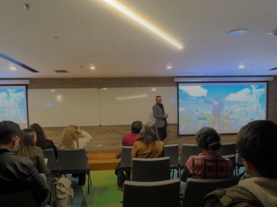
más informaciónEs un espacio donde aprenderás de manera práctica y sencilla a entender los números de tu negocio, para que puedas tomar decisiones claras y mejorar la rentabilidad del mismo de forma efectiva.
Más informaciónServicios en detalle
El sitio original desarrolla estas líneas en su página de eventos. Aquí se integran dentro de una sola experiencia, con más información y menos espacio vacío.
Encuentros prácticos para empresarios y emprendedores que necesitan comprender cómo los ciclos económicos afectan el crecimiento, la estabilidad y las decisiones de su negocio.
La metodología combina dinámicas participativas, casos reales y análisis en grupo para reconocer riesgos, anticipar cambios, optimizar recursos y responder con mayor claridad a los desafíos del mercado.
Cotizar taller ↗Conferencias basadas en experiencia aplicada con más de 300 empresas de diferentes sectores. El enfoque traduce los retos financieros diarios en herramientas concretas para mejorar el flujo de caja, el uso de recursos y la toma de decisiones.
Sesiones para profundizar en los asuntos que más inciden en la salud financiera del negocio. El trabajo se adapta al contexto de cada empresa y convierte las dudas en acciones claras.
El objetivo es fortalecer la comprensión de los números y avanzar con una visión financiera más segura y estratégica.
Solicitar mentoría ↗Una experiencia para quienes desean tomar el control de su dinero, gestionar mejor sus ingresos, ahorrar de forma estratégica y planear el futuro con mayor confianza.
Se abordan las barreras emocionales asociadas al dinero, la construcción de presupuestos, las decisiones de inversión y los errores que suelen frenar el camino hacia la libertad financiera. Cada participante termina con criterios y acciones concretas para avanzar.
Cotizar actividad ↗Finanzas personales
curso
Te presento Transformación Financiera, un programa diseñado específicamente para personas como tú, que buscan tomar el control de sus finanzas y alcanzar la libertad financiera antes de los 50 años.
Este curso está basado en un método diseñado por mí, que me ayudó a lograr mi propia libertad financiera a los 32 años y ahora quiero compartirlo contigo.
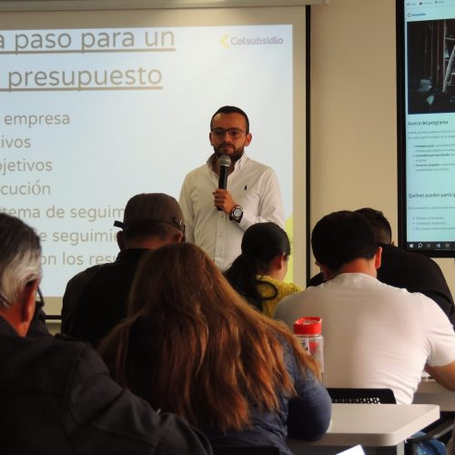
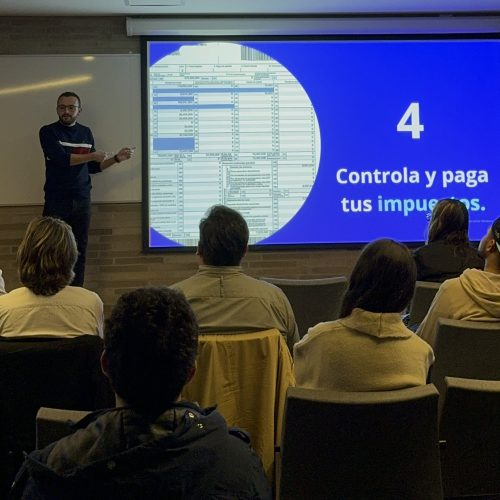
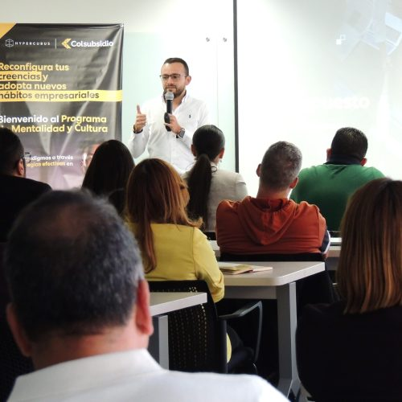
¿Para quién es este programa?
Tienes una sola o ninguna fuente de ingresos
No tienes el control de tus finanzas
No tienes los resultados financieros que quieres.
Tienes demasiadas deudas
Vives preocupado por tu presente y/o tu futuro financiero.
Quieres invertir pero no sabes cómo, cuándo y dónde.
Definición de metas financieras
Diseñamos paso a paso un plan para alcanzar tus metas financieras.
Diagnóstico Financiero Personal
Seguimiento personalizado
Te acompañamos en la ejecución del Plan de Acción y en la toma decisiones financieras relevantes en el proceso.
Contenido del programa

Tus resultados financieros actuales son producto de tus decisiones pasadas, vamos a identificar las razones por las cuales no estás generando riqueza y nos enfocaremos en el cambio de mentalidad que requieres para construir tu Futuro Financiero.
MÁS INFORMACIÓN ↗
Estrategias efectivas para gestionar tus deudas de una manera más eficiente y para usar la deuda como potencializador de tus inversiones.
MÁS INFORMACIÓN ↗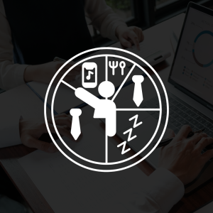
Este curso te brindará las herramientas necesarias para evaluar tu situación actual, identificar oportunidades y riesgos. Trazar un camino hacia un futuro más estable y próspero. A medida que avances, sentirás la tranquilidad de saber que cada decisión que tomes estará respaldada por una comprensión profunda de tus finanzas, lo que te permitirá avanzar con seguridad y certeza.
MÁS INFORMACIÓN ↗
Te ayudo a responder las 3 preguntas que más me hacen y son: Cómo, Cuándo y Dónde debo invertir. Te abriré el portafolio de las inversiones validadas y recomendadas tanto por mí como por el CLUB DE INVERSIONISTAS. Que te permitirá avanzar hacia tu Libertad Financiera.
MÁS INFORMACIÓN ↗Alcanza tu Libertad Financiera
TE OFREZCO UNA GARANTÍA TOTAL: si, después de seguir toda la metodología y realizar una revisión conjunta, no ves resultados, te devolveré el 100% de tu dinero.
VALOR DEL CURSO
$3.300.000 COPContenido audiovisual
Esto es lo que dicen algunos de mis estudiantes
«Junto a David Aponte aprendimos una serie de habilidades para lograr esa Libertad Financiera que todos queremos, te invito a que puedas seguirlo y puedas aprender esos 5 tips que nos da»
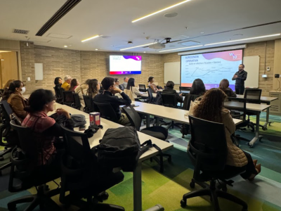
«David dictó una conferencia sobre finanzas personales y corporativas a los estudiantes del programa técnico y tecnólogo de Contabilidad y Finanzas, Desarrollo y Multimedia donde los estudiantes quedaron encantados con la charla, especialmente con la forma en que David los hizo participar. Además, las herramientas prácticas que compartió fueron el mejor regalo para completar su intervención»

«Soy parte del grupo de estudiantes de David Aponte. Su curso Transformación Financiera ha sido clave para organizar mis finanzas, aprender sobre inversiones, priorizar gastos y manejar un presupuesto eficiente. Gracias a él, ahora controlo mejor mis gastos y puedo comenzar a invertir. Recomiendo este curso especialmente a quienes no tienen noción de sus finanzas personales o no reconocen los déficits que afectan su estabilidad»

«David entiende como pocos la realidad nacional. Se nota que le apasiona la enseñanza y el bienestar de sus alumnos. Al hacer el curso con David y su empresa Financial Lab, recibí mucho más del dinero que invertí. Pude aplicar muchos conceptos que había aprendido en el pasado, pero no sabía cómo aplicarlos. David nos enseñó varios trucos que están para todos, pero que nadie conoce. Ahora soy consciente de cómo puedo llegar mucho más rápido al camino de prosperidad»

«La decisión de tomar el curso de finanzas con David Aponte ha sido una de las mejores decisiones e inversiones. Realmente fue un proceso enriquecedor que me brindó las herramientas necesarias para mi organización financiera actual, pero sobre todo para tomar las riendas de mi futuro»
Ubicación y comunidad
Conoce algunos de los talleres y conferencias realizados por David Aponte y Financial Lab.
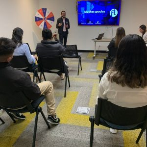
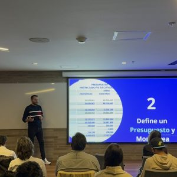
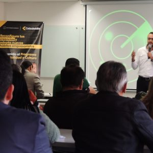
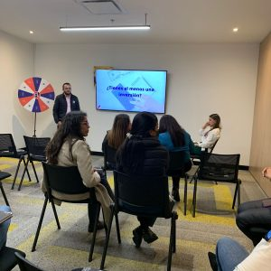
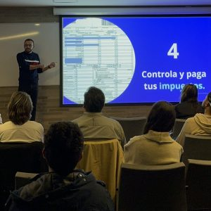
Contacto
Cuéntanos qué necesitas. El equipo de Financial Lab te orientará sobre cursos, conferencias, talleres y mentorías.
Bogotá, Colombia.
Financial – LAB & David Aponte
Lunes a Viernes de 8:00 a.m. a 6:00 p.m.
Sábados de 8:00 a.m. a 12:00 p.m.